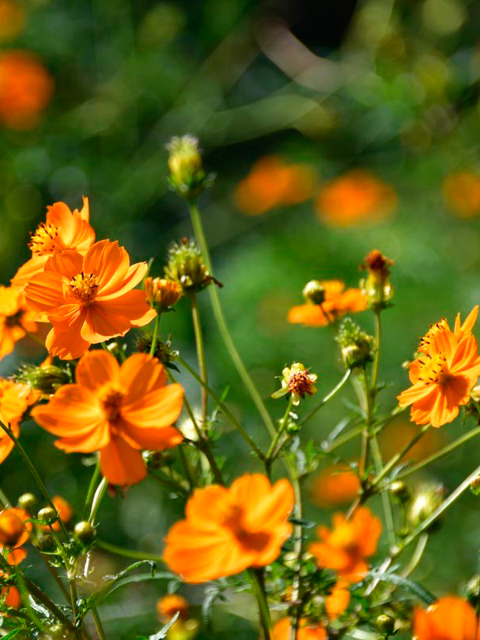

浜離宮恩賜公園 四季→秋 エリア→東京南部

このスポットには
浜離宮は、江戸のウォーターフロント、東京のオアシスと言われて昔も今も愛されている都内最大の都立庭園です。東京湾から海水を取り入れ潮の干満で景色の変化を楽しむ、海辺の庭園に用いる様式を取り入れています。池や水路は海水なのでボラやハゼ、クラゲ、エイが泳ぐ姿が見られることもあります。花畑には約30万株のキバナコスモスが一面を朱赤色染めるように咲き誇ります。キバナコスモスが終わるころ、花畑がコスモスのピンクで一面が染めあげられます。
このスポットには
こんな歴史が・・・
元々は1654年に徳川綱重が江戸湾の一部を埋め立てて屋敷を建てたのがはじまり。将軍家の鷹狩り場であった。歴代将軍によって幾度かの造園、改修工事が行なわれ、十一代将軍徳川家斉の時にほぼ現在の姿の庭園になった。
所在地
東京都中央区浜離宮庭園1-1
最寄り駅
大江戸線、ゆりかもめ 汐留駅